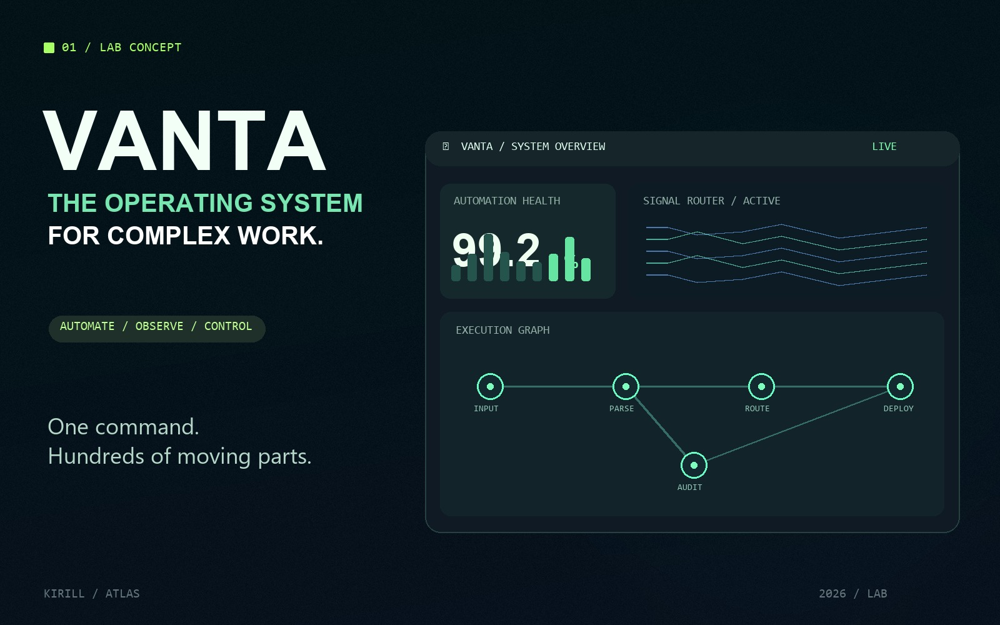
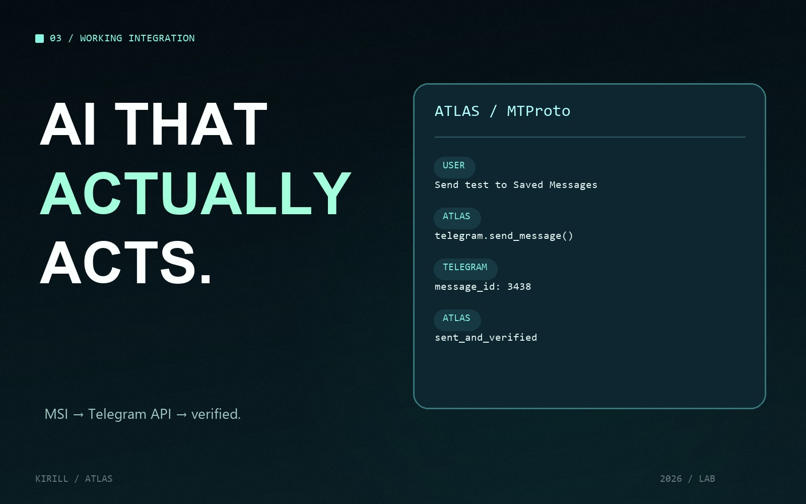
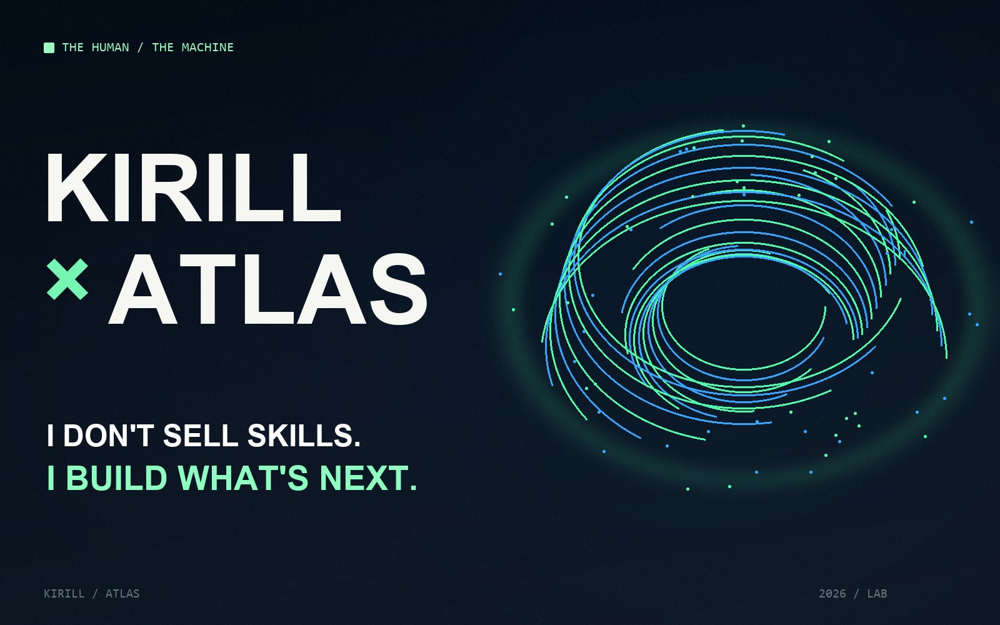

Interfaces with a pulse. Systems that act. Automation that disappears into the experience. Original concepts and working experiments by Kirill.
EXPLORE THE LAB ↘Move past portfolios made of promises. Open the experiments. Touch the controls. See what runs.

A command center for orchestrating complex work. Five nodes. One input. Traceable execution.
LAUNCH WORKING DEMO ↗Shapes that listen. Motion that responds. A living interface, not a frozen mockup.
PLAY WITH THE INTERFACE ↗
ChatGPT → local runtime → Telegram MTProto. A real message sent and verified back through the API.
OPEN THE VERIFIED CASE ↗
Vote for what should be built next. The audience gets a say in the next lab experiment.
VOTE IN TELEGRAM ↗New ideas. Strange problems. Nothing off-the-shelf.
TELL ME WHAT YOU WANT TO BUILD ↗